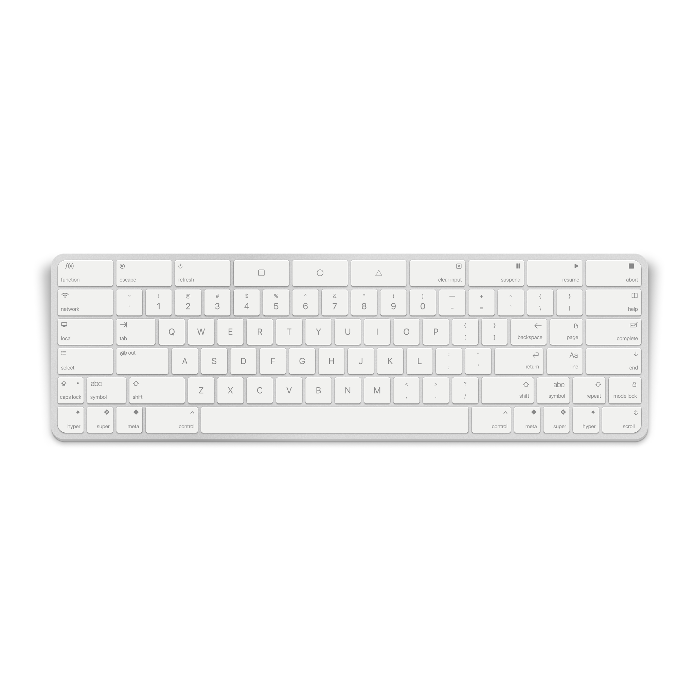
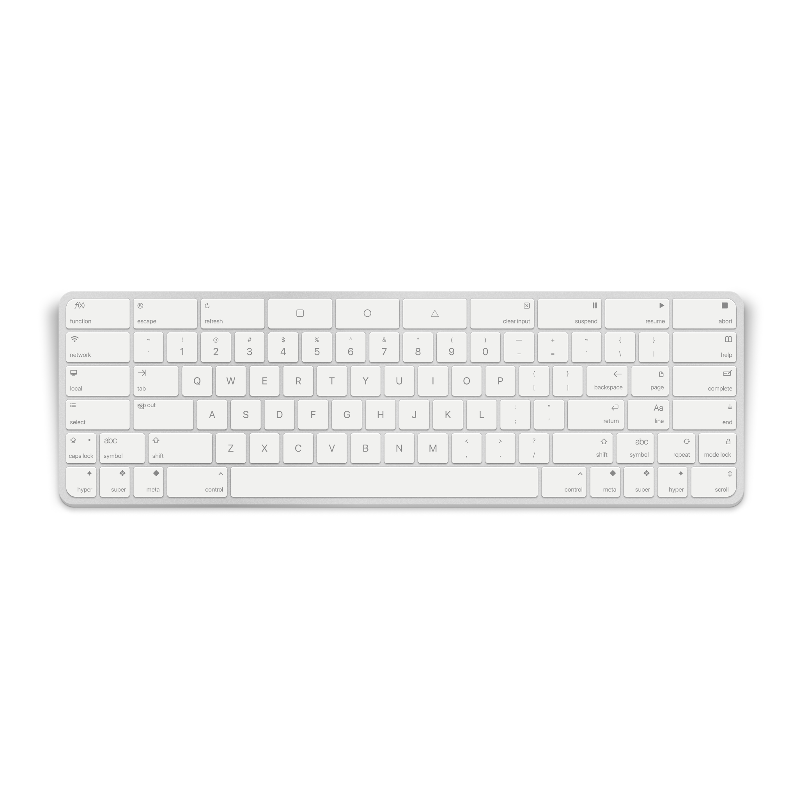
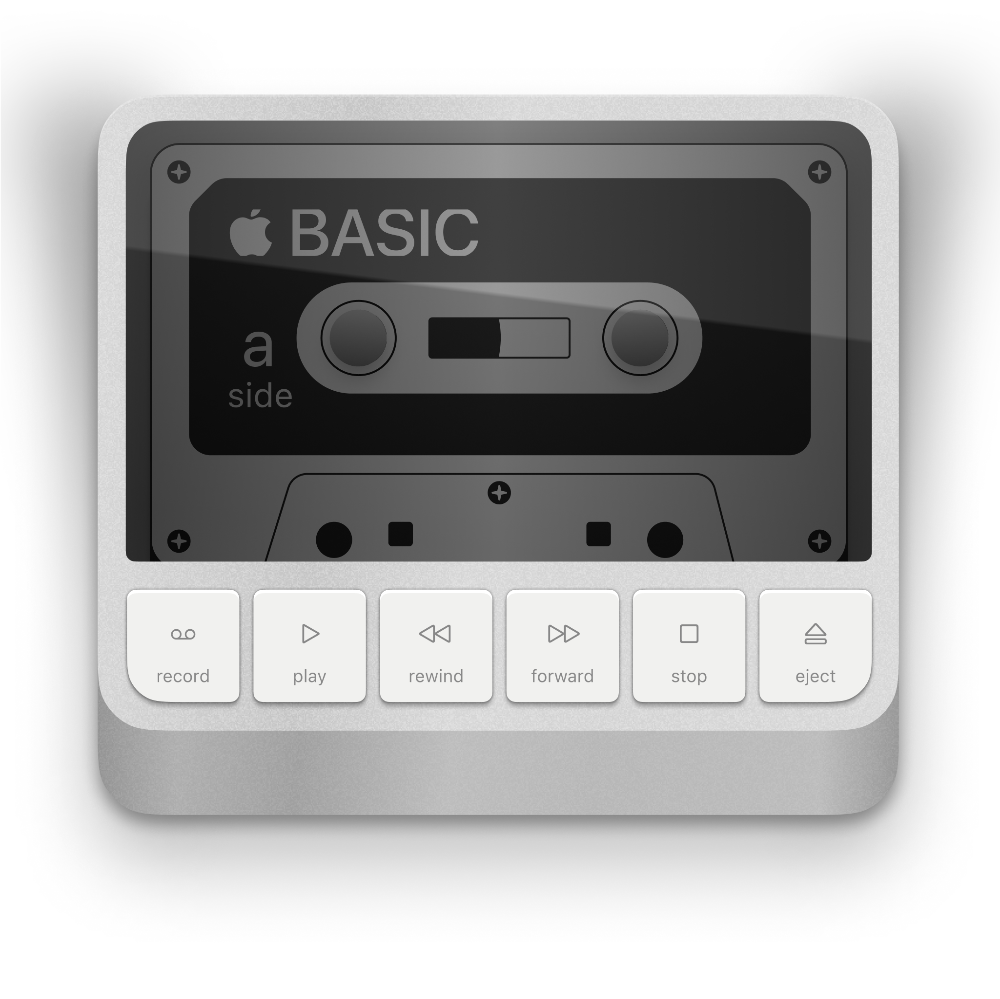
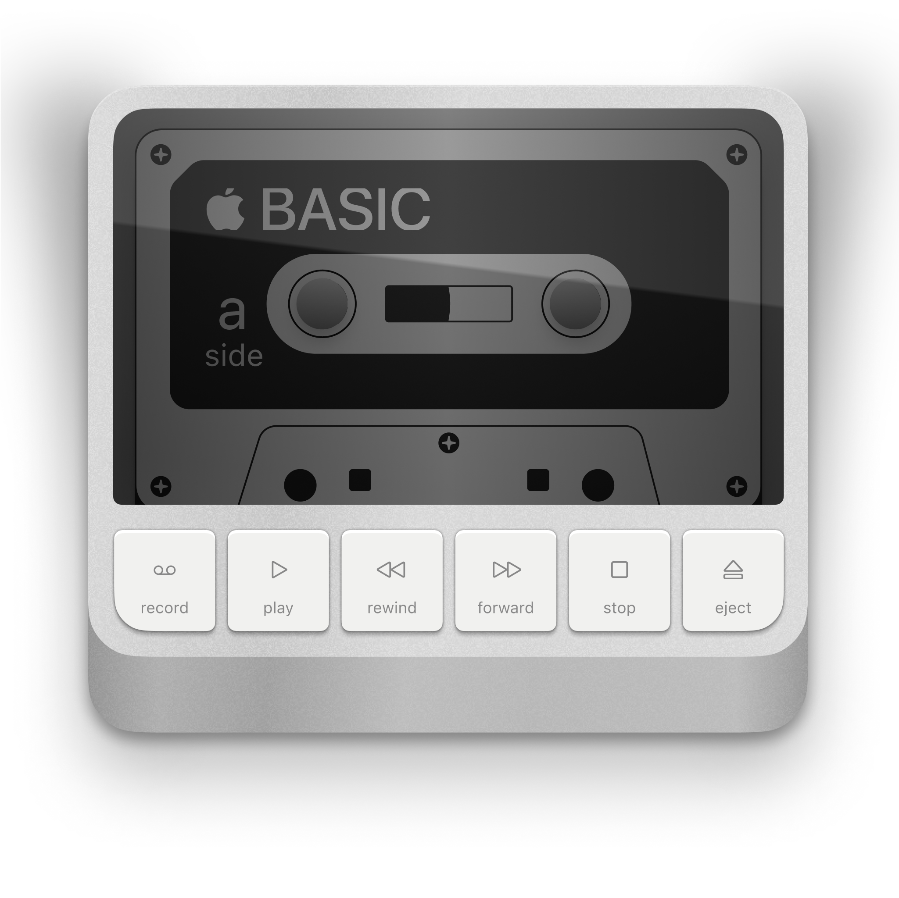
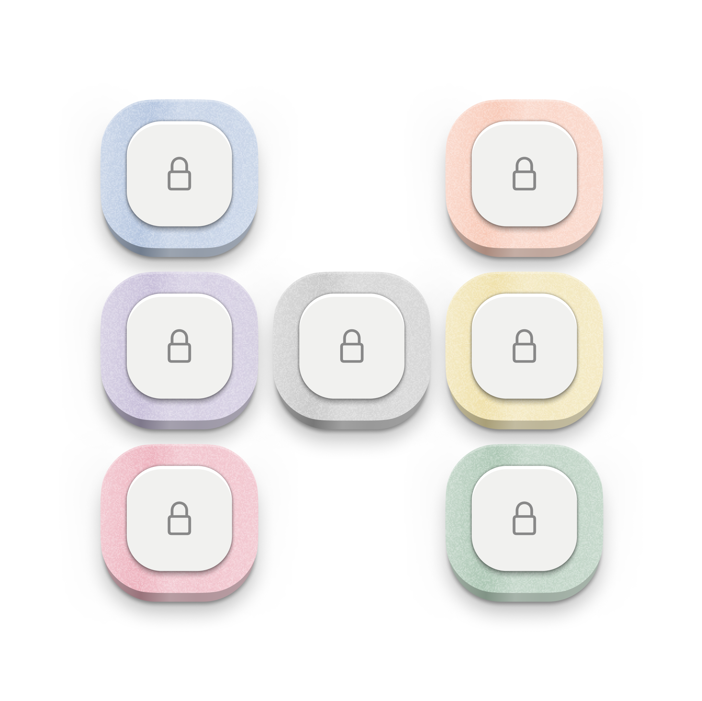
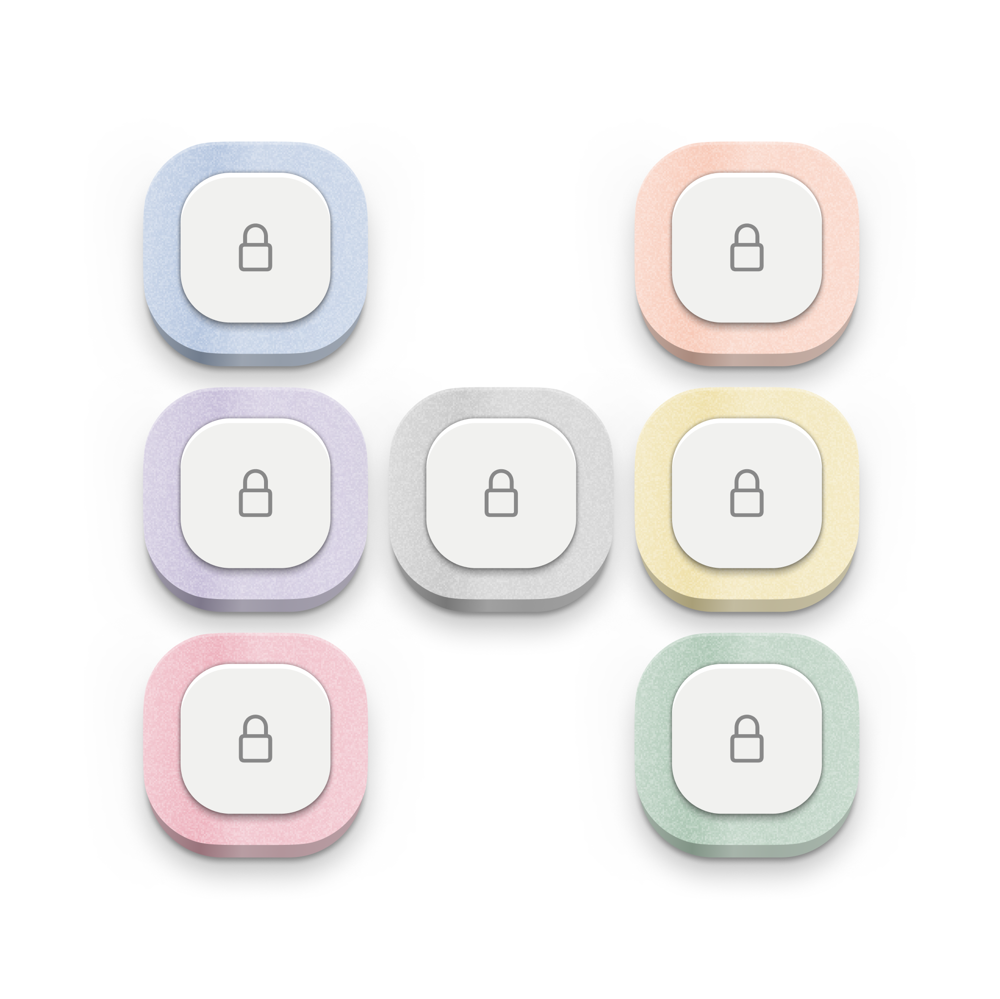
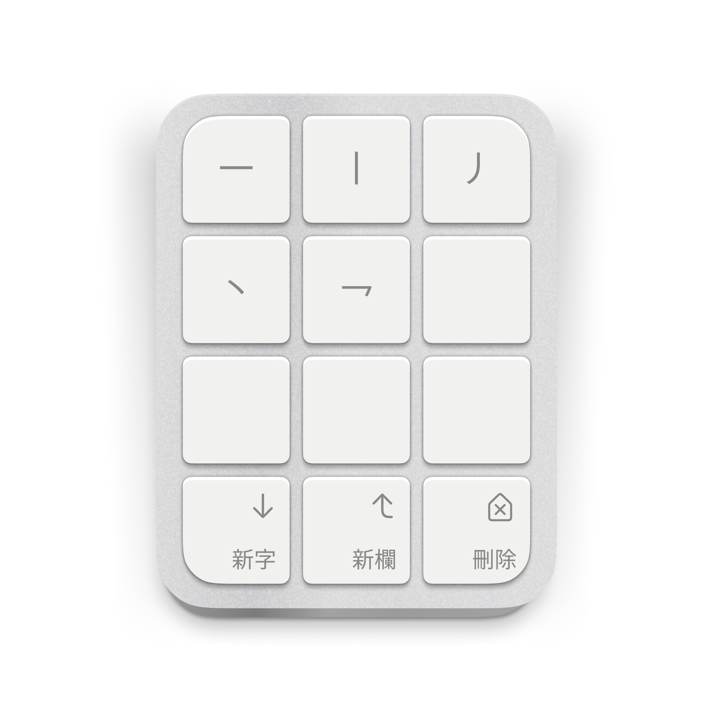
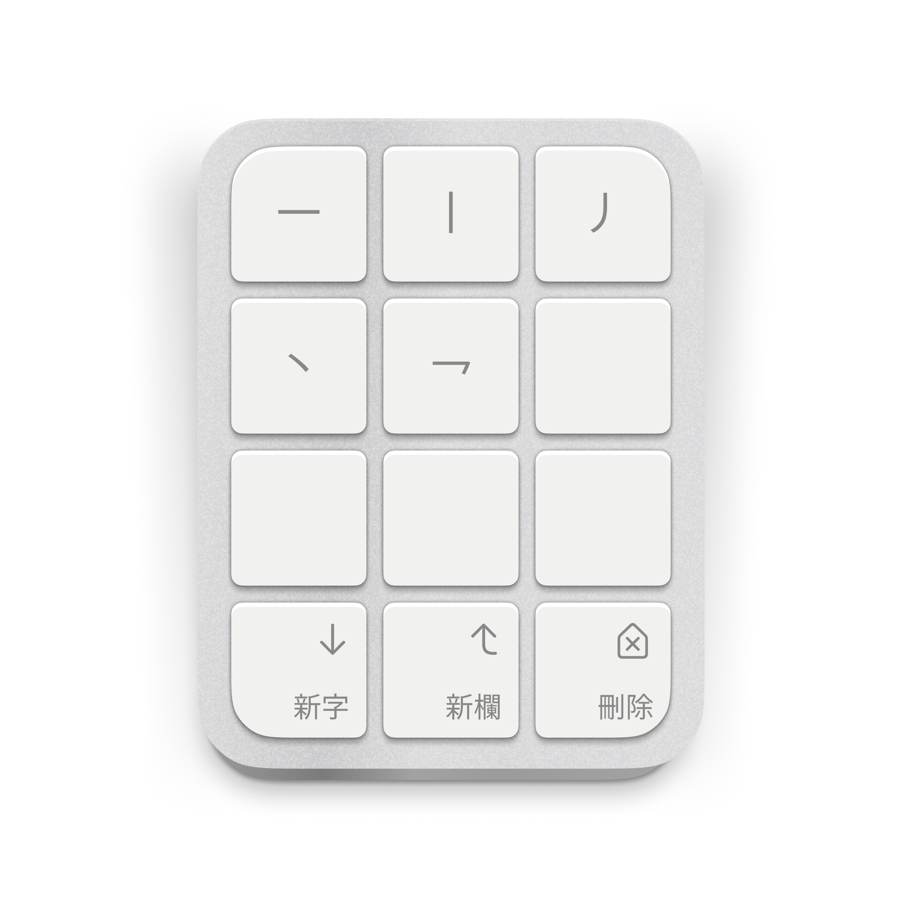

Liminal Tech
Liminal Tech is an imagination of what technology looks like in another world. I was inspired by @nanoraptorʼs work, creating strange but familiar electronics products, mostly Appleʼs.


 


 

 

 
